Pocket Library
UCD, Responsive Design, Material 3
Background
During my studies, I worked in a library. This is how I first came into contact with library apps. The apps I am referring to give library customers access to various eBooks, eAudiobooks, ePapers and sometimes videos. Using these apps, you can borrow and consume the media on your personal device for free for a certain period. Excited about the possibility, I recommended these apps to my family and friends, and many also started using them.
Although I have been using Onleihe and Libby regularly for five years, I still find it challenging to navigate around the app. Family members, acquaintances and library customers frequently sought my support since they could not cope with the complicated and unintuitive navigation. In the Google Play Store, the Libby app is frequently criticised for its usability, despite a relatively high overall rating. The following chart presents some selected ratings:
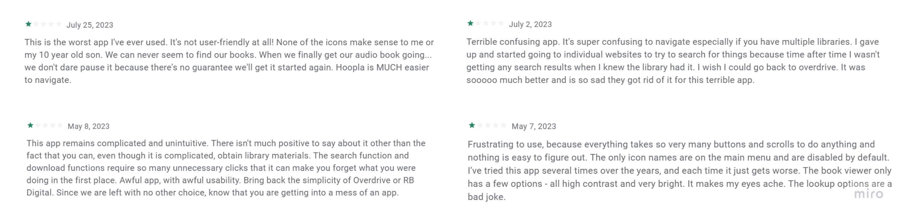For this reason, I chose the topic of library apps as my personal UX exercise project.
Disclaimer: I am not affiliated with any library or library app.My personal goals
For this project, I have set myself the following goals:
- Design a new library app that provides a better user experience. I will focus on media management and remove eReaders and audio players from the scope.
- To take on the different roles in designing a product and improve my UX research and design skills.
- Learn and exercise the use of the Material 3 design system
- Practise designing responsive applications (mobile/tablet)
Analysis of the apps Libby and Onleihe
In preparation for the user interviews, I examined the two apps, Libby and Onleihe. Since navigation was often criticised, I focused on the information architecture. This also helped me to get an overview of the contents of the apps.
Libby has a navbar with five menu items. On the respective page, further sub-pages can be accessed via chips.
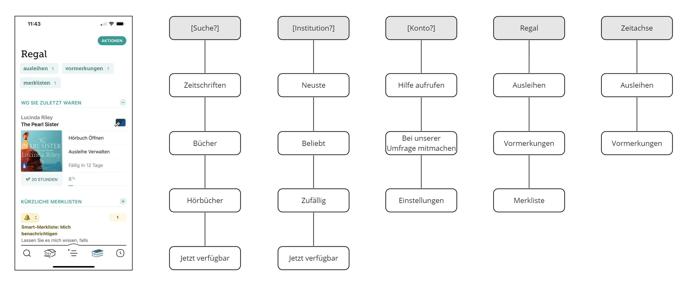Onleihe has a navigation drawer with two levels. Specific subpages then have tabs.
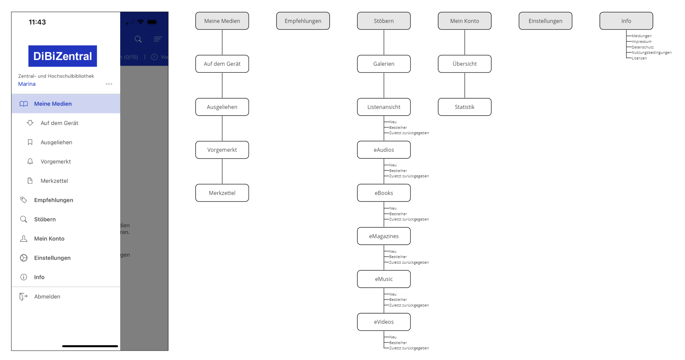Understanding the users
My findings from the analysis of the two apps informed the preparation of the user interviews. I interviewed four people who use at least one of the two library apps. Some of the posed questions were:
- Why do you use library apps?
- On which devices do you use the apps?
- How do you search for an item?
- How do you select an item?
- What are your favourite features?
- What features do you miss?
- What bothers you about the app?
I used an affinity map to analyse the results from the interviews.
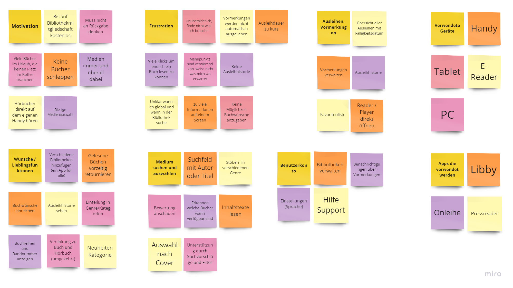The interviews confirmed my personal perception of the apps. These are the main problems from the interviews:
- Overcrowded pages and a complicated and unclear information architecture make it difficult for users to navigate through the app and thus to easily access the media on offer. This is problematic because searching, selecting and borrowing media are the app's core functions, and direct and easy access must be ensured.
- Users miss functions such as the historization of used media or the submission of book requests (available in Libby, not Onleihe).
Who is the typical user?
To illustrate the goals and needs of the target group, I created the following persona based on the people interviewed.
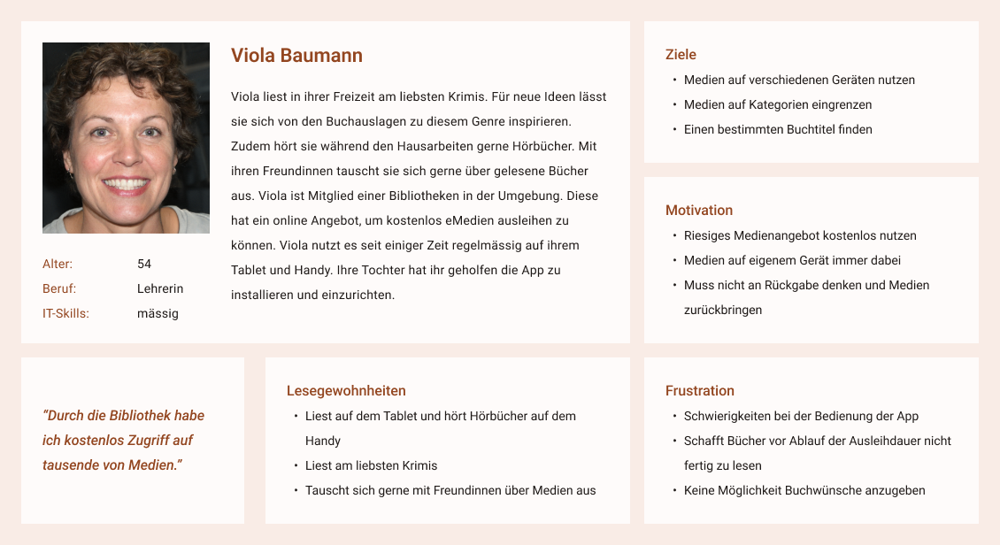Derive user requirements
Because information overload is a problem in the apps I studied, I tried to reduce the complexity and limit myself to the important content. I formulated the requirements for the future app based on user research.
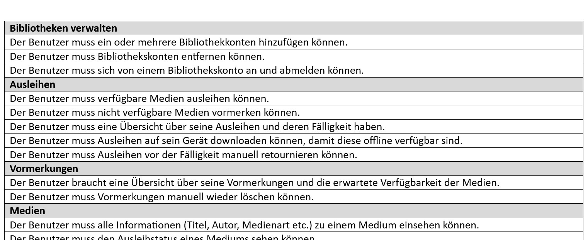Developing the information architecture
Once the requirements had defined the scope of the future app, the next step was to create an information architecture. Since the information architecture of the examined apps is too complicated, I carried out an open card sorting with three users to improve it for the new app. This resulted in the following information architecture:
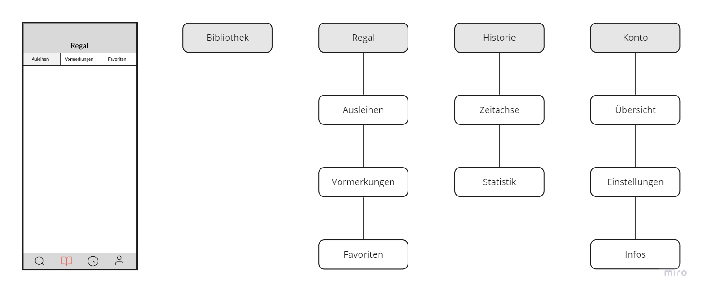Layout and user guidance
For the new design, I investigated Libby, Onleihe, and other media apps to find out which layouts work best on which device. Then I examined different layouts for the mobile phone and tablet on paper.
After deciding on layouts, I focused on the user experience. I created wireframes to visualise the concept.
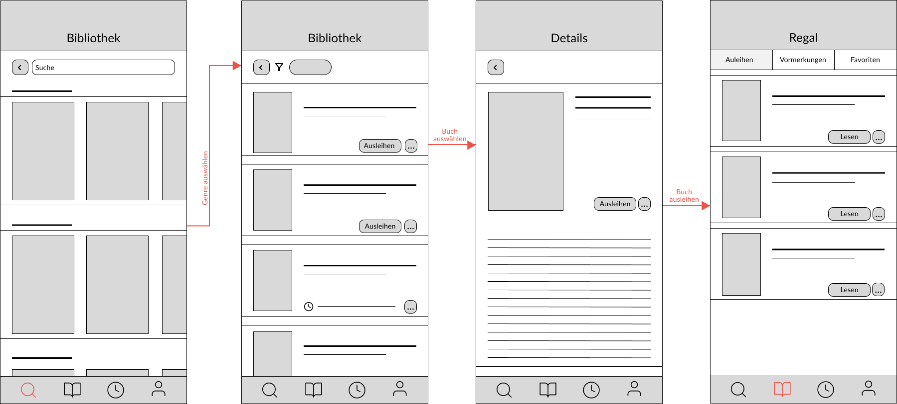The new design
One of my personal project goals was to learn the Material 3 design system. That is why I designed the app based on Material Design 3. I got the Material Design 3 Kit from Material Design for Figma and used the Material Theme Builder to create the theme. I chose a beige colour scheme because I associate it with parchment and books.
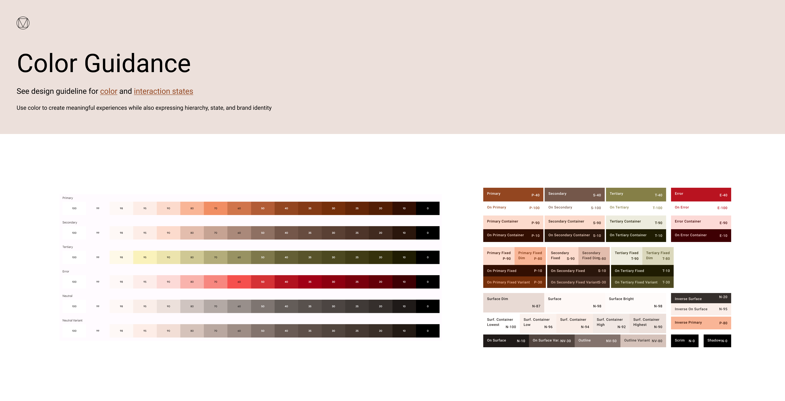In order to realise my design ideas, I adapted certain components or added additional variants. The following picture shows a section of my custom components, which are all based on material components as far as possible.
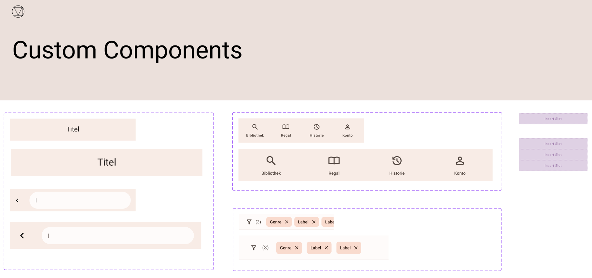The Pocket Library app
Based on the information architecture created, the app has a navigation bar through which the four main content areas are directly accessible.
The shelf area (Regal) contains a sub-navigation directly below the header. This subdivides the Shelf area into Lending, Reservation and Favourites. Each page includes a list of the associated media. The individual items contain a brief overview of the medium. Favourites can also be recognised because they are marked with a star. Loans can be downloaded via an icon button for offline availability. The icon button "More" opens the menu with further actions that can be performed on a medium. Clicking on the item opens a detailed page with information on the content of the medium. Under the tab "More Info", all further metadata on the medium and the licences are listed.
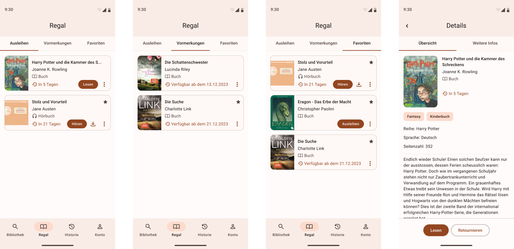The Library section (Bibliothek) has a search function, which is opened via the "Search" icon button, and a filter function. Popular filters such as "New", "Popular" and "Available" are suggested and activated with one click. Other filters can be opened by clicking on the "Filter" icon button. The entry page consists of carousels sorted by genre. If the user filters or searches, he always ends up with a list view.
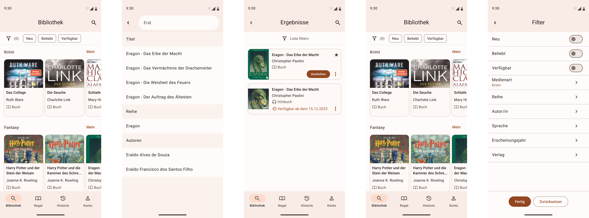The History section (Historie) is divided into the Timeline and Statistics page with a sub-navigation. Under the timeline, all media that the user has borrowed are listed in descending order by month. The statistics area shows the user's media consumption. The Material Design Data Visualisation Kit was used for the design.
The Account section (Konto) contains an overview page where libraries can be managed. Under Settings, language and default settings etc., can be managed. The Info page has space to list the imprint, data protection, terms of use and licences.
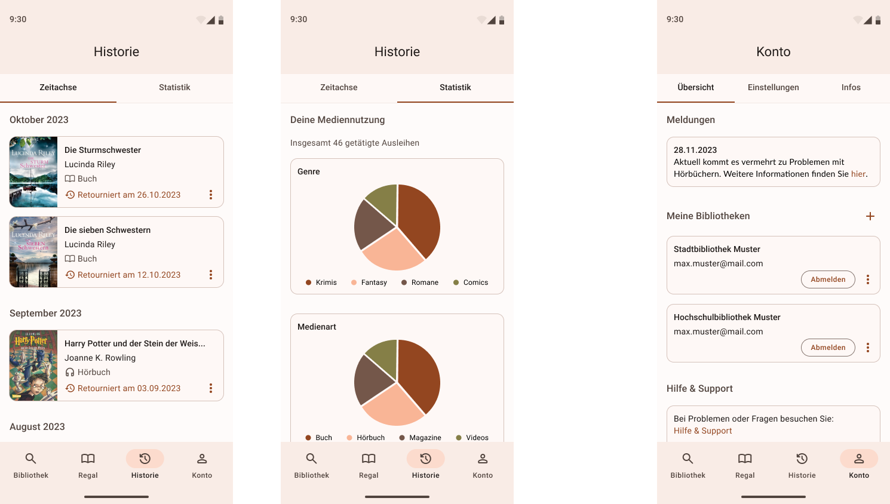The finished prototype can be seen here:
User evaluation
To evaluate the designed app, I tested the prototype with the five users I interviewed at the beginning of the project. For this purpose, I conducted a moderated usability test. The prototype above was adapted for the test tasks.
The first impression of the app was positive. The test persons said it was "clean", "clear", "structured", "clear" and "simple". The test subjects were asked to solve the following five tasks:
- Find and borrow the book "Eragon - Das Erbe der Macht".
- Add a crime novel to the favourites.
- Delete a reservation.
- Answer which books were borrowed in September.
- Unsubscribe from the sample university library account.
All five test subjects could complete the five tasks independently and said they found the service user-friendly.
Reflections on my work here
In conclusion, I have achieved the four goals I set initially. The evaluation with the users confirmed that I could improve the user experience by creating a clear structure and simple user guidance.
I practised UX methods during the project and improved my design skills using Material Design 3 as a new design system. By designing the prototype for mobile and tablet, I dabbled in responsive design.
My most significant learning was that spending enough time creating a well-thought-out information architecture and user guidance contributes significantly to ease of use. I had difficulties with picking meaning full names for areas and pages, and I still see the potential for improvement there.